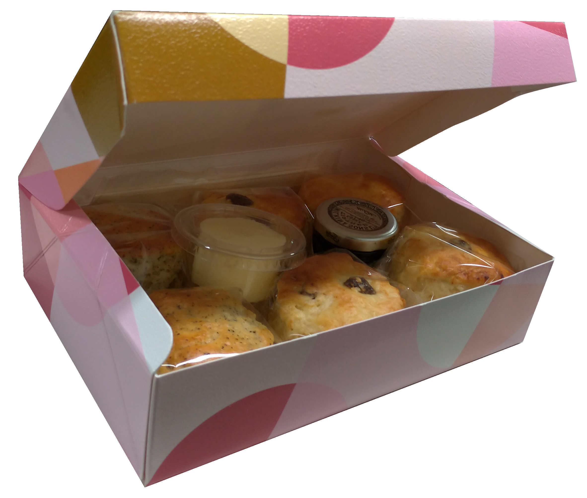
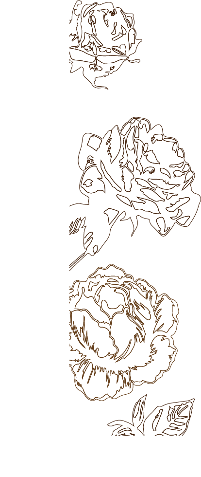
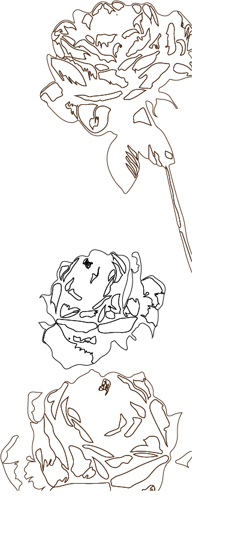

品牌 故事
司康鬆餅最早起源地是葡萄牙

旅居英國近三十年，將英式傳統下午茶風味引進台灣。堅持以純手工打造的英式下午茶點心。灰色調倫敦天氣，典雅的飲茶文化，講話有讓人羨慕的英式口音的台灣店長熱情待人友善也注重禮儀，特別喜歡與朋友們分享親手烹調的美食、生活大小故事，重視與家人好友聚在一起的時光。



關於 司康
司康又稱英國茶餅、英國鬆餅，是蘇格蘭人的快速麵包，「Skone」這個字的起源，有人說它來自荷蘭文「schoonbrot」，美麗的麵包，另外有些人認為它來蘇格蘭國王被加冕的皇冠上的命運之石。
司康由小麥、大麥或麥片製成，是英式下午茶常見的點心，歐洲人形容司康是下午茶的主角，司康的好壞即可決定該茶館的等級。司康的口味多元，可以做成甜的口味，也可以做成鹹的口味，除了可以當作早餐之外，也可以當成點心，食用時常搭配果醬或奶油。口感外層酥脆，內層濕潤鬆軟，搭配濃郁的伯爵茶香，迷人的口感讓你愛不釋手。
司康又稱英國茶餅、英國鬆餅，是蘇格蘭人的快速麵包，「Skone」這個字的起源，有人說它來自荷蘭文「schoonbrot」，美麗的麵包，另外有些人認為它來蘇格蘭國王被加冕的皇冠上的命運之石。